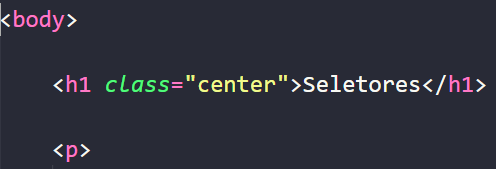

Vamos dizer que quiséssemos estilizar um componente específico do nosso site, supondo que esse componente seria
o nosso título 1, o primeiro seletor para realizar essa estilização, e o mais simples que é usado com base em
qual tag queremos trabalhar.
Por exemplo, vamos ir para nosso seletor que seria nosso arquivo CSS e vamos colocar a palavra body, para nos
referirmos á tag <body>, após isso iremos abrir e fechar chaves({}), e dentro das chaves iremos adicionar
as propriedades css qeu queremos adicionar à nossa página.
Por exemplo:
Vimos na imagens acima que no body (corpo do nosso site), adicionamos dentro da chave a propriedade background. Essa tag é utilizada para selecionarmos a cor de fundo que queremos que
nosso site tenha.
Também adicionamos aos nossos títulos a propriedade color (cor) e a propriedade font-size (tamanho da nossa fonte). Essas propriedades serão adicionadas á todas as
nossas tag <h1> dentro da nossa página seletores.html
Já para nossos parágrafos adicionamos as mesmas 2 propriedades dos nossos títulos, porém alteramos somente os
valores delas, ou seja, para a cor adicionamos a #122E40 e para o tamanho da nossa
fonte selecionamos o tamanho de 20px.
Outra coisa que podemos fazer em nosso site também é pode ser feito da seguinte forma, dentro do nosso arquivo
CSS seletores e dentro dele podemos criar estilos através de classes, e então, adicionarmos essas classes aonde
gostaríamos que usassem aquelas propriedades, por exemplo, para deixar nosso título alinhado ao centro da tela
fizemos o seguinte:
Selecionaremos nossa página de CSS:
Após isso, criaremos a propriedade com os valores desejados:
Depois disso, vamos voltar para nosso arquivo que desejamos adicionar aquele estilo, (no caso, seletores.html).
Feito isso, vamos adicionar na tag que desejamos atribuir as propriedades a class com as propriedades queremos,
veja o exemplo a seguir:

Pronto, dessa forma criamos uma class com uma propriedade CSS que podemos adicionar em qualquer tag que
quiséssemos, ou seja, deixar propriedades CSS pré definidas.
Vamos dizer que apena um item em especifico tenha um certo comportamento, para isso nós utilizamos o seletor id, esse seletor serve para batizarmos um tag com algum nome único, imagine que
para o próximo parágrafo nos utilizaremos um id de teste. para realizar isso, nos
vamos ir a nossa página de CSS e vamos adicionar a class #teste e dentro das chaves
vamos colocar as propriedades desejadas por nós.
Neste paragrafo nos adicionamos o atributo CSS text-align:center para alinha o texto desse parágrafo ao centro da nosso página, e depois disso vamos adicionar o atributo background: para selecionarmos a cor do fundo no nosso parágrafo.
Resumindo, os prinicipais seletores que temos são esses:
(Obs:. É importante sabermos de alguns detalhes importantes, tais como, nunca começar o nome do identificar com
um número, por exemplo, poderíamos colocar o nome de um identificador com teste1, porém nunca 1teste. Outra
coisa é que o nome do identificador tem que ser único, ou seja, não podemos ter 2 identificadores com o nome
teste, para isso teríamos que utilizar as class, que já possuem essa função. )
Para agrupar alguns seletores em um só para economizarmos código, basta adicionarmos , e o nome da tag que
queremos usar aquele elemento
Os seletores CSS são essenciais para a estilização de páginas web, permitindo aplicar estilos de forma eficiente e organizada. Aprendemos que existem diferentes tipos de seletores, como:
Além disso, vimos que é possível agrupar seletores para otimizar o código e evitar repetições desnecessárias. Também destacamos a importância das regras de nomenclatura, como evitar iniciar identificadores com números e garantir que cada id seja único. Com esse conhecimento, podemos estruturar e personalizar nossos sites de maneira mais eficiente, garantindo um design mais organizado e de fácil manutenção.